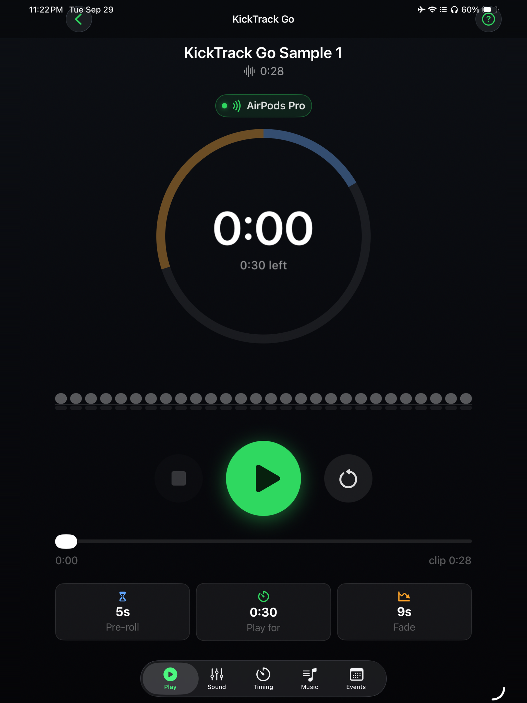
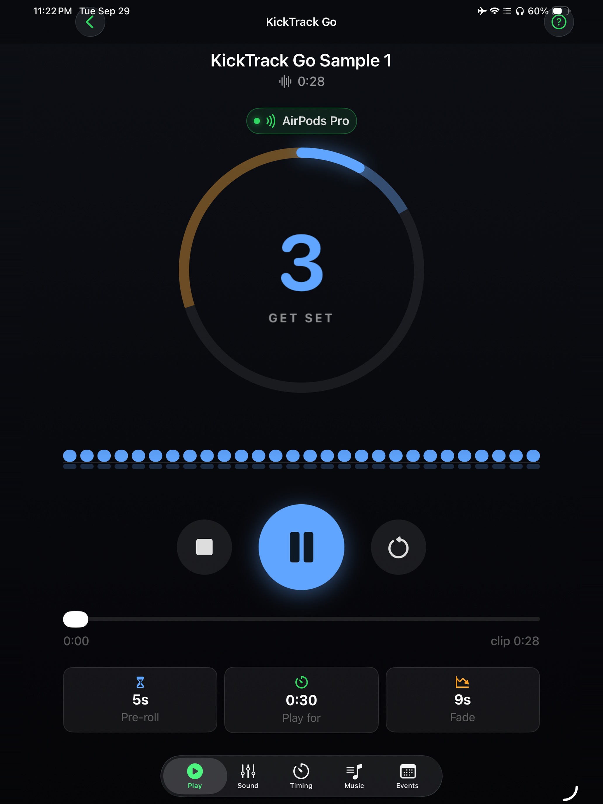
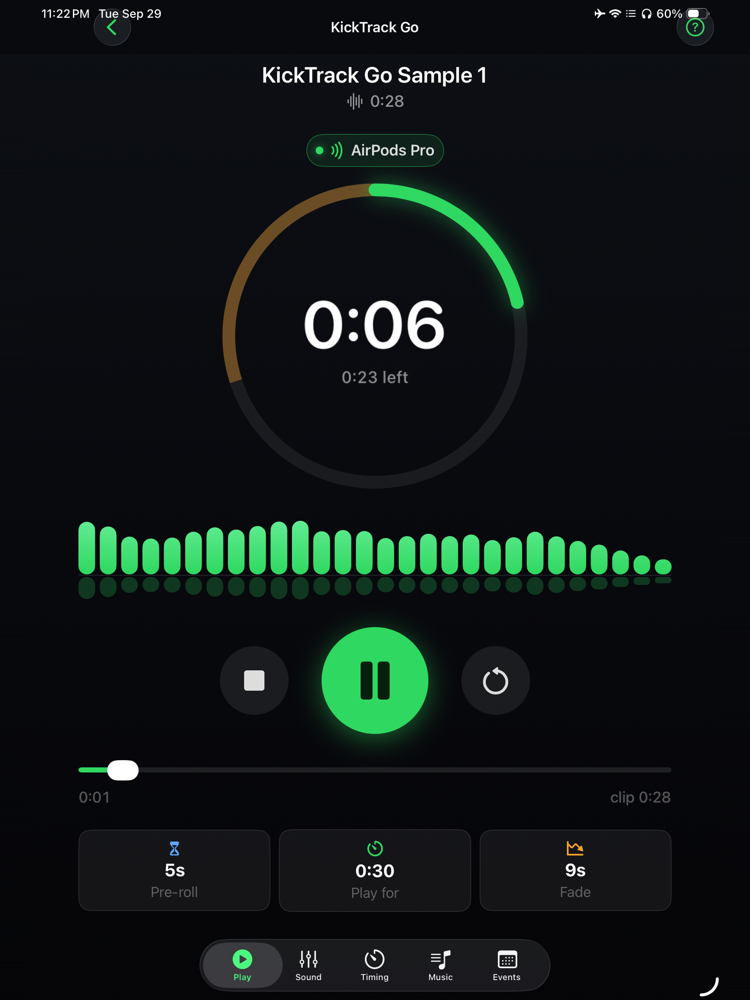
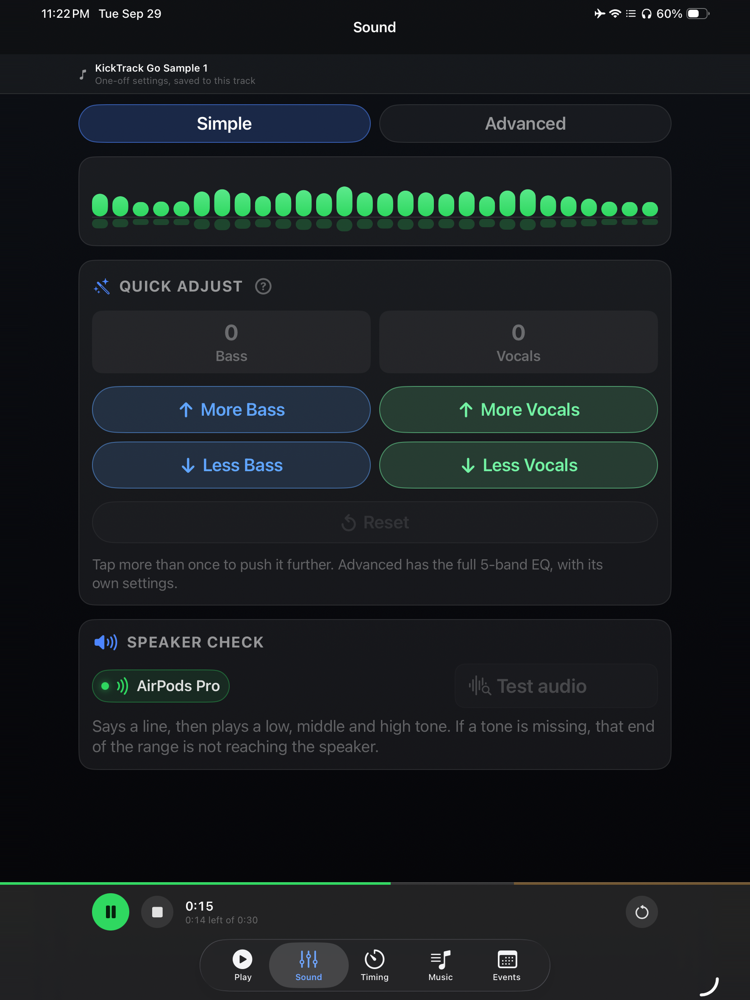
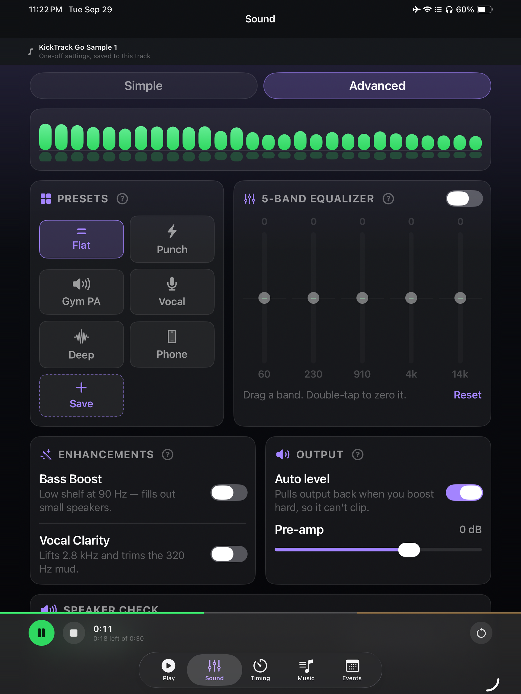
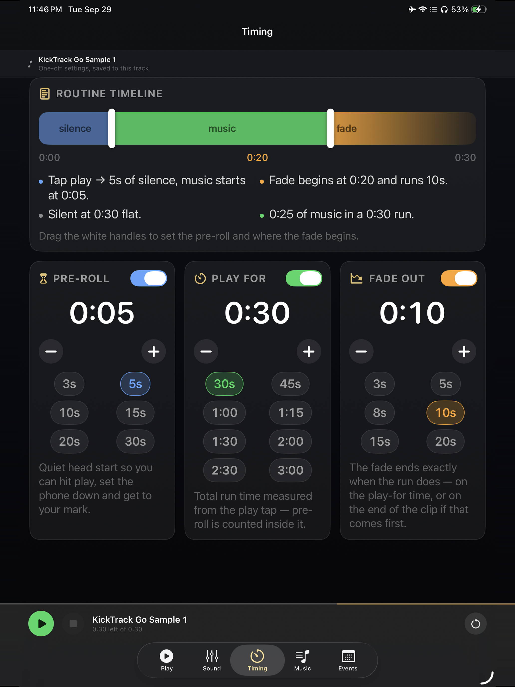
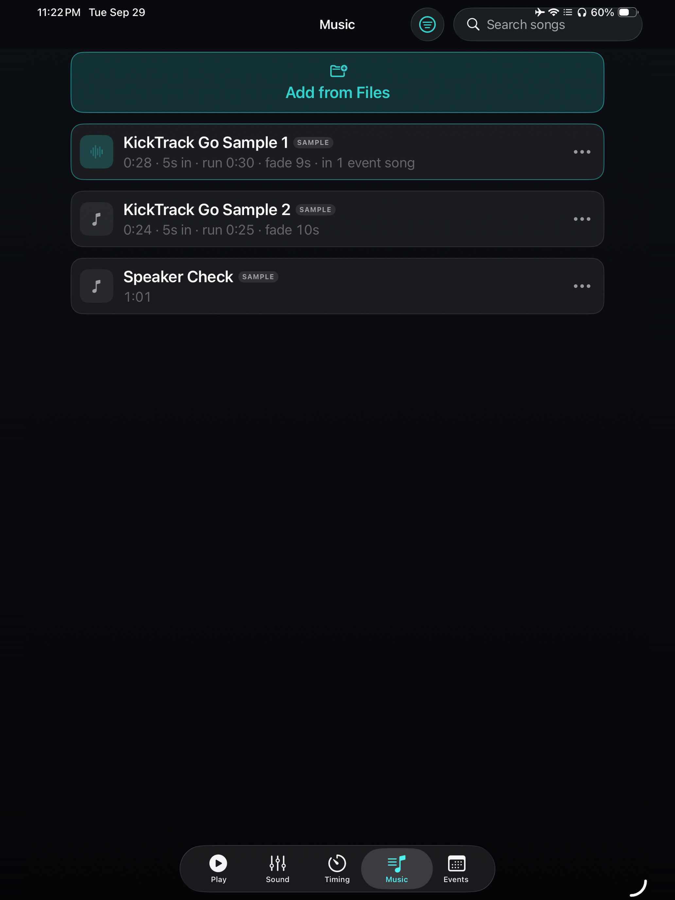
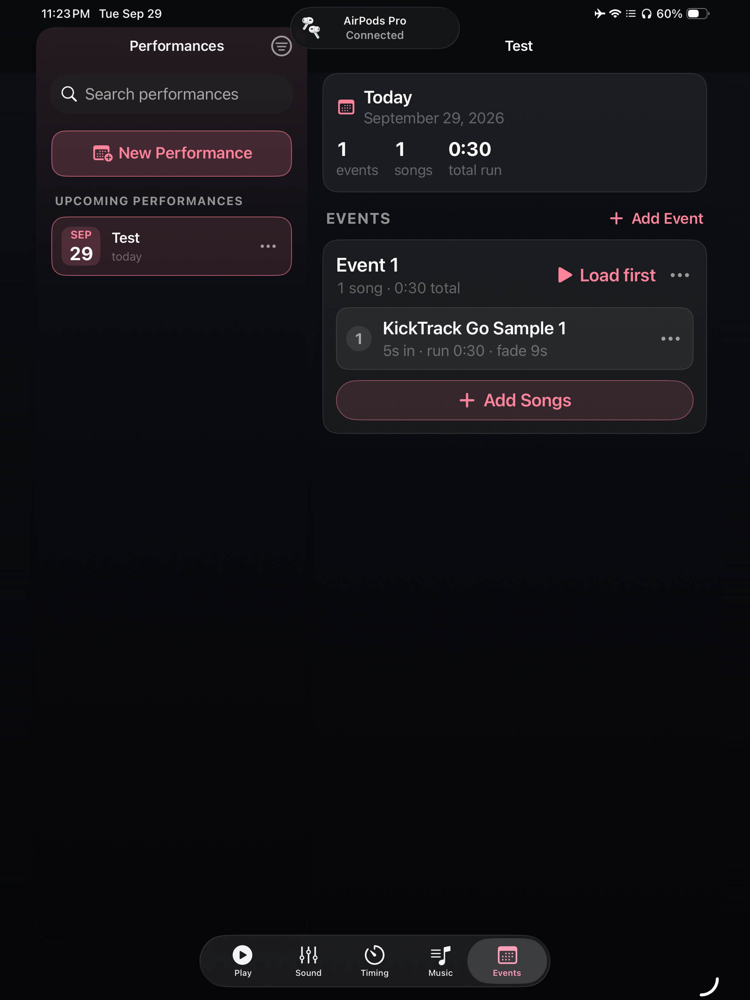

KickTrack Go
Be on your mark by beat one.
You can't press play and be on your mark at the same time. KickTrack Go closes that gap. Press play, put the phone down and walk out: the music waits through a silent walk-on, starts when you're set, and stops on an exact clock.
It's built for creative and XMA martial arts forms, dance routines, cheer, and any performance where you start your own music and have to be standing still before the first beat.


How it works
- Add your music. Import any audio file from Files. The app keeps its own copy, so the track still works if the original moves.
- Set your walk-on. Choose how many seconds of silence you need to reach your mark.
- Press play and go. The music comes in when you're set and fades out right on time.
What it offers
Pre-roll walk-on
A silent head start of 3 to 30 seconds, or any length you set. A countdown ring shows how long until the music starts.
Cut to the clock
Set how long the routine runs and how long it fades, and pick a start point partway into the song. A 1:20 cut ends at 1:20. The routine timeline shows the silence, music and fade in one picture before you hear it.
Sound for the room
A 5-band EQ, presets such as Punch, Gym PA and Vocal, and Bass Boost and Vocal Clarity for rooms that swallow either. Quick adjust nudges bass or vocals in one tap, and you can save your own presets.


Competition day, planned ahead
Group songs into a Performance with a name and date, and give it one playlist per time you're on the floor. Each song in an event keeps its own pre-roll, length, fade and EQ, so the same track can run as a 45-second cut in one event and a 1:20 cut in another.


Ready out of the box
Three sample tracks, including a speaker check with tones, sweeps and pink noise for testing a PA, are in your library on first launch. A short walkthrough covers the basics in four screens, and an advanced path covers the rest.
Made for iPad too
Same features, larger screen!
















Private by design
No account, no sign-in and no internet connection. The app collects nothing and has no network capability at all. Everything stays on your device.
Requirements
iPhone running iOS 17.0 or later, or iPad running iPadOS 17.0 or later.
Always test your setup thoroughly before live use. Run each track all the way through on the speaker or PA you'll compete on, at performance volume, and stand through the pre-roll — so nothing is a surprise on the floor.
More
- Support — setup guide, common questions and contact
- Privacy policy